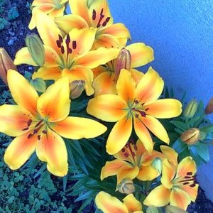
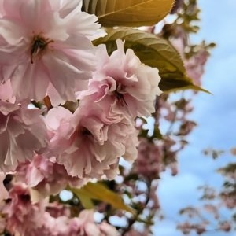
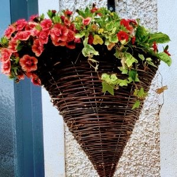

OutDoor Plants
Perenials
If you grow lots of annual flowers, you are familiar with the annual chores necessary to maintain such beds: you purchase flower seedlings (or start your own), and plant them. You nurture them throughout the growing season, fertilize and water them; then, when the season's over and the plants die, you pull them out. Next year, the cycle begins anew.
Perennial plants remain in the ground year after year. Once established, many perennials need minimal upkeep in the form of watering and fertilizing, since their roots are more far-ranging than annual plants’ roots. Many perennials spread readily, filling out garden spaces and providing more and more color each year.
Trees
Native Trees are the best trees to grow in Ireland because they are used to the Irish conditions. The list of garden trees in Ireland includes Alder, Ash, Birch, Cherry, Blackthorn, Whitethorn, Crabapple, Hazel, Holly, Oak, Mountain Ash, Scots pine, Whitehorn, Willow and Yew.You can choose from different varieties of trees, either deciduous or evergreen. Deciduous trees can be more beneficial to wildlife.
Also your location and the position of the site you want to plant will help determine what type of tree you can use.
Discover More HereHanging Baskets
Hanging baskets are a great way to do so, let us talk you through how to perfect them. With practice, this skill can become your second nature! Now is a great time to get them planted up to ensure that they are in full bloom with bright cascades of flowers in time for all your summer garden events.
The best part is you can really put anything you want in a hanging basket. Of course, there are a few tips and tricks we will share to achieve the optimal results, but really, the only limitation is your imagination!
Discover More Here